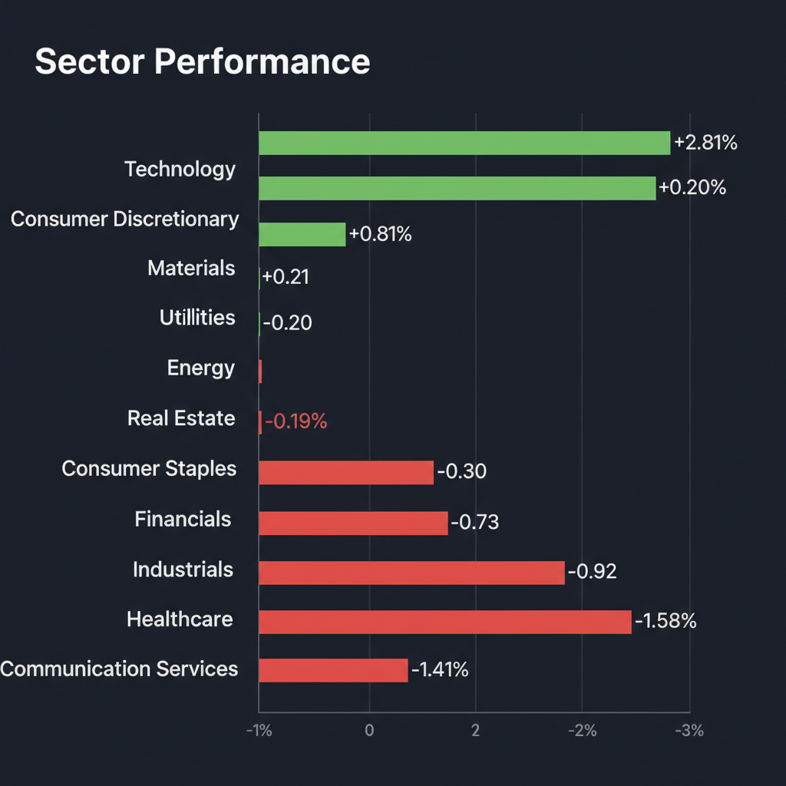
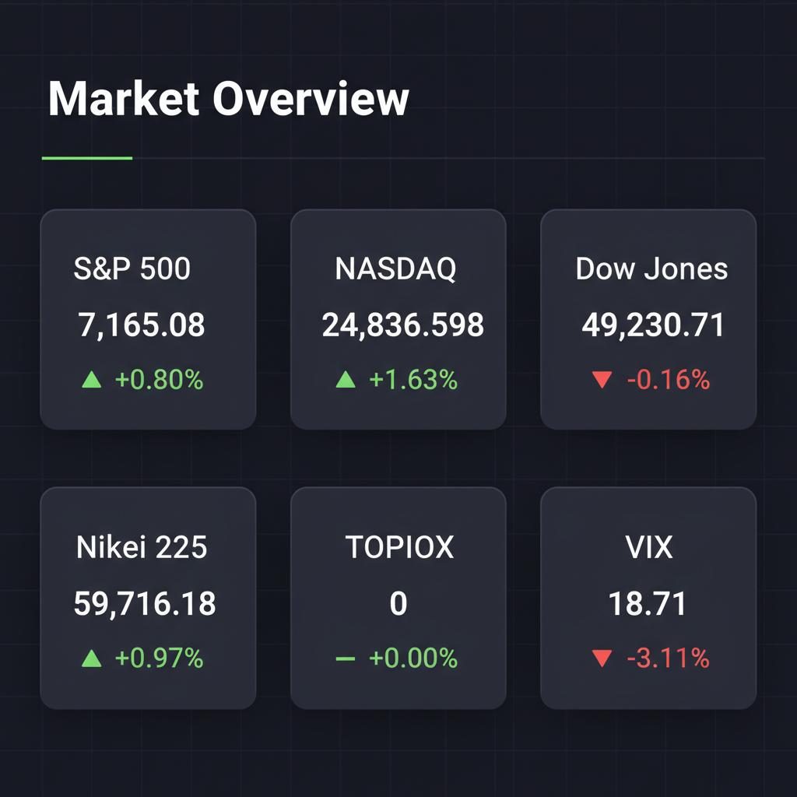

Daily Investment Report - 2026-04-27
Generated: 2026/4/27 7:19:33


本日の投資チームミーティングにおける各エージェントの詳細な分析と激しい議論を踏まえ、最終的な投資家向けレポートを以下の通り作成いたしました。
1. エグゼクティブサマリー
- 現在の市場はAI・データセンター関連への極端な資金集中と、製薬セクターからの資金流出が同時に進行する「歴史的な二極化」の様相を呈しています。
- 時価総額2550兆円規模の米国ビッグテック決算と、日米欧の「中銀ウィーク」を目前に控え、市場は過度な楽観バイアスに傾いておりボラティリティ急増のエネルギーが蓄積されています。
- 投資家は過熱する大型AI株への追随を避け、AI波及の恩恵を受ける「隠れた中小型株」の選別と、中東地政学リスクに対する「エネルギーヘッジ」の構築を同時に進めるべき局面にあります。
2. 注目銘柄リスト
強気（買い推奨）
- テクノホライゾン（6629.T） [時価総額: 約150億円]: 光学・電子機器のニッチトップであり、データセンター偏重のAI相場から「現場のエッジAI・ロボティクス」へ資金が波及するストーリーに乗る、割安な小型バリュー成長株です。
- 太陽ホールディングス（4626.T） [時価総額: 約1,600億円]: プリント基板用ソルダーレジストで世界首位の強固なシェアと高い営業利益率を誇り、非公開化に向けた動きが株価のダウンサイド・プロテクション（下値防御）として機能する安全マージンの高い銘柄です。
中立（様子見）
- 米国 中小型バイオ・製薬銘柄（XBI等の構成銘柄） [時価総額: 中小型]: AIブームの裏で資金流出が続き「悪夢」の状況ですが、手元現金が豊富で黒字の銘柄に限り、将来的な逆張り・買収ターゲットとしての監視を推奨します。明確な底打ちシグナルが出るまでは手出し無用です。
- SCREENホールディングス（7735.T） [時価総額: 大型株]: 洗浄装置で世界シェア4割を握る優良企業であり順張りのモメンタムは強いですが、市場の成長織り込みが急ピッチで進んでいるため、新規エントリーは浅い押し目を待つべきです。
弱気（警戒）
- 東京電力ホールディングス（9501.T） [時価総額: 大型株]: 2025年3月期まで7期連続でフリーキャッシュフロー（FCF）の赤字が見込まれており、株主還元の原資がないうえに原発再稼働という不確実性に依存しているため投資不適格と判断します。
3. セクター推奨ランキング
中東（イラン・ホルムズ海峡周辺）の地政学リスクとインフレ再燃のテールリスクに対する、ポートフォリオの最も強力な防衛（ヘッジ）手段として機能するため。
- 2位: AI周辺インフラ・エッジデバイス（日米の中小型）
ビッグテックの巨大なAIインフラ投資の恩恵が滴り落ちる「裏方領域」であり、大型株のようなバリュエーションの過熱感がなく、爆発的な成長余地（テンバガーの可能性）を残しているため。
構造的な円安の恩恵をフルに享受しつつ、データセンター網の電力問題解決や工場の自動化を支える確固たる業績の裏付けがあるため。
短期的な資金流出のモメンタムが極めて強く（落ちてくるナイフ）、金利高止まり環境下ではディフェンシブとしての魅力も薄いため。
4. 今週の注目イベント
- 米国ハイパースケーラー（AI・クラウド大手）の決算発表集中（特に29日）
- 日米欧の中央銀行による金融政策決定会合（中銀ウィーク、いずれも金利据え置き予想）
- 米国の重要インフレ指標（個人消費支出デフレーター）の発表
- 日本の主要企業の本格的な決算発表（27日のアドバンテスト、日立製作所など計38社）
5. リスク要因
- AIバブルの巻き戻しリスク: ビッグテックの決算ガイダンスが市場の完璧な期待をわずかでも下回った場合、一極集中していた資金が流出し、マルチプル・コンストラクション（株価倍率の急低下）を引き起こすリスク。
- 地政学・インフレ再燃リスク: アラビア海での船舶拿捕など中東情勢がさらに悪化し原油が急騰した場合、インフレが再燃し、FRBが利下げではなく「利上げ再開」の議論に追い込まれる最悪のシナリオ。
- 日本株のガイダンス・リスク: 決算発表において、日本企業が為替前提などを極端に保守的（円高水準）に設定することで、見かけ上の減益予想となり一時的な株価ショックを引き起こすリスク。
6. アクションアイテム
- 決算ピークと中銀ウィークの不確実性を通過するまで、全体のポジションサイズを通常の半分程度に縮小し、キャッシュ比率を引き上げる。
- 現在保有しているAI関連銘柄や大型グロース株には、直近のサポートラインの直下に厳格なトレイリングストップ（逆指値）を設定し、急落から利益を保護する。
- 市場の無関心の中に放置されている「AI関連の恩恵を受ける割安な中小型株（テクノホライゾン等）」のファンダメンタルズを精査し、打診買いの準備を進める。
- ポートフォリオ全体の保険として、エネルギーセクター（XLE等）の組み入れや、低下しているVIX指数を活用したコールオプションの購入を本日中に実行する。